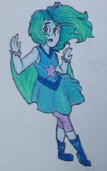
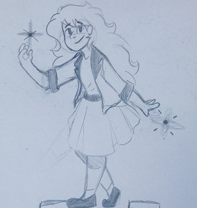
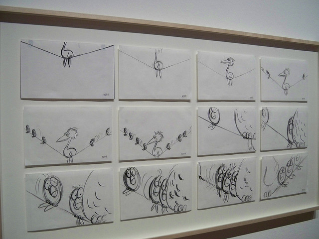

Of some of my various hobbies, being able to draw and make art is certainly my favorite. I started doodling cartoons and little animals around sixth grade, and have slowly been improving since. I've moved on to drawing people, and it has occasionally gained some attention from others! I've been practicing for a little over 3 years as of now, and I'm still improving.
I've grown an uncanny interest in art and animation since I was about ten years old, and it's benefitted me from the beginning. I've made many friends with similar interests, some who are even halfway across the world! Along with making friendships, many movies, comics, and shows have helped me through a lot of struggles in my life, and I'd like to be able to do the same for others in the future!
After a while of being an artist, I started considering looking into animation as a future career. I discussed it with a few friends and family, I'm interested in becoming a storyboard artist for Pixar or Disney! I'm hoping to improve my style and skill within the next few years, and apply to SCAD for college.
One of my main goals in life is to be able to leave a mark on the world, even if it's just one person. I believe that art has been able to help me accomplish that. I've become more creative, understanding, and more confident in myself due to drawing and the art community! As silly as some of it sounds, I think art has helped me and many others through rough times, and I want to be able to pass that hope on to as many people as I can.
  By: Sarah Heal